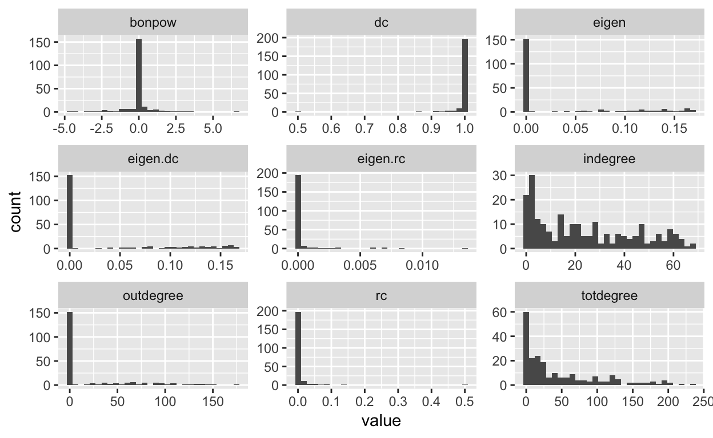
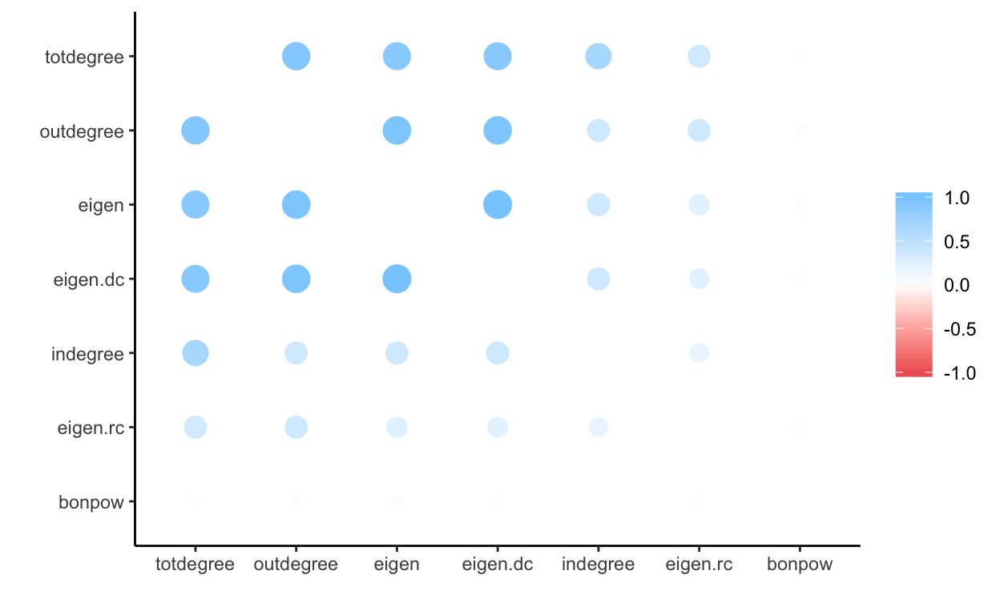

This tutorial will demonstrate use of the R commands used to measure aspects of network status introduced in Week 4’s Lecture:
We will be using several datasets for this exercise. The first is the Game of Thrones Like-Dislike network. It is a small, weighted, directed network showing characters affinity for one another. The degree to which a character likes another is held by the “weight” attribute and ranges between -5 and 5.
The GoT book data were scraped from the 5 published books, and a tie indicates the number of times that two characters are mentioned within close proximity of each other. This abbreviated dataset consists only of characters who appear at least 10 times throughout the 5 books, and all ties between characters who co-occur in the text together fewer than 5 times were removed.
The third dataset is from the IMF, and a tie represents the value of a country’s securities held by another country in 2014. The fourth network is created similarly to trade100 last week, and is a 0/1 tie indicating that country I holds at least 100 million in securities of country J.
Inspect the basic network descriptors for the imf2014 network. For this exercise, refer to Week 1 tutorial. This will help you get familiar with the dataset you are using.
Find network size, type (un/directed, un/weighted, bipartite) and available attributes of vertices and edges
#Find network size and typeInspect the dyads, triads, and component structure of the imf2014 and gotlike networks (refer to tutorial 2):
#Dyad census, triad census, number and size of components, isolatesCreate a dataframe with the in, out and total degree values of the network (refer to tutorial 3):
#attach the in, out, and total degree values to the dataframe#igraph version:
imf2014.nodes<-data.frame(name=V(imf2014.ig)$name,
totdegree=igraph::degree(imf2014.ig, loops=FALSE),
indegree=igraph::degree(imf2014.ig, mode="in", loops=FALSE),
outdegree=igraph::degree(imf2014.ig, mode="out", loops=FALSE))
#statnet version:
imf2014.nodes<-data.frame(name=imf2014.stat%v%"vertex.names",
totdegree=sna::degree(imf2014.stat),
indegree=sna::degree(imf2014.stat, cmode="indegree"),
outdegree=sna::degree(imf2014.stat, cmode="outdegree"))And do the same for the Game of Thrones data:
#attach the in, out, and total degree values to the dataframeView the top 5 values of your new dataframe:
head(imf2014.nodes)
head(gotlike.nodes)We use evcent to calculate node level eigenvector centrality scores in statnet, and the familiar centralization score with the correct option to calculate network centralization. We are using the head command to just view the first few scores.
##calculate eigenvector centrality scores: statnet
head(evcent(imf2014.stat, ignore.eval=TRUE))## [1] 0.08062651 0.09605899 0.00000000 0.16320362 0.13952951 0.13036367##calculate eigenvector centralization index: statnet
centralization(imf2014.stat, evcent)## [1] 0.1342141The igraph command outputs a list of results that can be accessed by name. The eigenvector centrality score for each node can be accessed by calling $vector. Another element that might be of interest is the graph level eigenvector centralization score, $centralization.
##calculate eigenvector centrality scores: igraph
temp<-centr_eigen(imf2014.ig,directed=T)
names(temp)## [1] "vector" "value" "options" "centralization"
## [5] "theoretical_max"length(temp$vector)## [1] 219head(temp$vector)## [1] 0.7488415 0.4698262 0.9122483 0.8375863 0.7593559 0.9323418temp$centralization## [1] 0.6156723Once again, igraph and statnet give completely different scores. This can be attributed in part to the fact that by default, igraph rescales scores with the option scale=TRUE. Another contributor may be the defaults for using weighted network data, although turning off the default weights for statnet using the option ignore.eval=TRUE doesn’t seem to matter.
I suspect that the remainder of the difference in the scores produced by the two measures is attributable to different approaches to dealing with directed networks. A little digging on the internet reveals that part of the issue may also be due to the fact that we are providing directed graphs to the routine. Evidently, igraph is using the incoming ties to calculate eigenvector centrality. The developer of statnet discusses the issue of eigenvector centrality for directed networks more generally here, and recommends using Bonachic power and other related measures for directed networks.
Add the eigenvector centrality node score onto your node level measures dataframe for imf2014, and find the top 5 values.
#add eigenvector centrality to node measures
imf2014.nodes$eigen<-evcent(imf2014.stat)
#arrange descending and return top 5 nodes
arrange(imf2014.nodes, desc(eigen)) %>%
slice(1:5)Create a similar table of the eigenvector values for the gotlike dataset, and find the 5 nodes with highest eigenvector centralitiy.
#add eigenvector centrality to node measures
#arrange descending and return top 5 nodes#add eigenvector centrality to node measures
gotlike.nodes$eigen<-evcent(gotlike.stat)
#arrange descending and return top 5 nodes
arrange(gotlike.nodes, desc(eigen)) %>%
slice(1:5)Now try creating a similar table of the eigenvector centrality values for the imf100 version of the imf2014 data, and find the 5 nodes with highest eigenvector centralitiy. There is no existing imf100.node dataframe, and it will need to be created.
#create node measures incuding eigenvector centrality
#arrange descending and return top 5 nodes#add eigenvector centrality to node measures
imf100.nodes<-data.frame(name=imf100.stat%v%"vertex.names",
totdegree=sna::degree(imf100.stat),
indegree=sna::degree(imf100.stat, cmode="indegree"),
outdegree=sna::degree(imf100.stat, cmode="outdegree"),
eigen<-evcent(imf100.stat))
#arrange descending and return top 5 nodes
arrange(imf100.nodes, desc(eigen)) %>%
slice(1:5)Now, let’s try calculating the node-level bonacich power centrality score. This gives us the bonacich power score for each node. Once again, we will only return the first few values using head.
#calculate bon. power centrality for nodes: igraph
head(power_centrality(imf2014.ig))## Argentina Costa Rica China, P.R.: Mainland
## 4.996090e-02 1.101590e-01 7.627719e-15
## Austria Chile Brazil
## -9.037332e-01 -4.373095e+00 -6.053832e-01#calculate bon. power centrality for nodes: igraph
head(bonpow(imf2014.stat))## Argentina Costa Rica China, P.R.: Mainland
## 4.996090e-02 1.101590e-01 -7.983536e-14
## Austria Chile Brazil
## -9.037332e-01 -4.373095e+00 -6.053832e-01This time, the two approaches are pretty similar. There is one exception visible - China. A good guess would be that the source of that difference is a major contributing factor to the differences in eigenvector centrality scores. To see why this is, compare the eigenvector scores for China in the previous exercise.
Note that the routine used by bonpow() doesn’t appear to incorporate weights, and fails when the adjacency matrix is singular. A matrix is singular when any column can be expressed as a linear combinaton of other columns, as might be found if a node has no connections or if two nodes have the same pattern of friendships). Singular matrices are therefore more likely when weights are ignored. If bonpow() returns NaN for all nodes, try substituting power_centrality().
Add the bonachic power centrality scores to the gotlike.nodes dataset, and view the nodes with the five highest scores.
#add bonachic power centrality to node measures
#arrange descending and return top 5 nodes#add bonachic power centrality to node measures
gotlike.nodes$bonpow<-power_centrality(gotlike.stat)
#arrange descending and return top 5 nodes
arrange(gotlike.nodes, desc(bonpow)) %>%
slice(1:5)Now try doing the same for the gotbook data. Are there any differences? What do you expect is true about the different networks?
#add bonachic power centrality to node measures
#arrange descending and return top 5 nodes#add bonachic power centrality to node measures
gotbook.nodes$bonpow<-bonpow(gotbook.stat,gmode="graph")
#arrange descending and return top 5 nodes
arrange(gotbook.nodes, desc(bonpow)) %>%
filter(is.na(bonpow)==FALSE)%>%
slice(1:5)There are no standard routines in igraph or statnet to calculate the derived and relected centrality scores. Instead, we need to extract the underlying network adjacency matrix and run some simple matrix operations on the extracted matrix. The basic intution is that these two scores together comprise the Eigenvector centrality score, and thus we can parse them out manually.
mat2014<-as.matrix(as_adjacency_matrix(imf2014.ig, attr="weight"))To calculate the proportion of centrality that is received, we first square the adjacency matrix. The diagonal of the adjacency matrix is equal to the the square of node degree. We then divide this diagonal (sqared degree) by total sqaured indegree (calculated by rowSums) to get the proportion of received centrality.
#square the adjacency matrix
mat2014sq<-t(mat2014) %*% mat2014
#Calculate the proportion of reflected centrality.
imf2014.nodes$rc<-diag(mat2014sq)/rowSums(mat2014sq)
#replace missing values with 0
imf2014.nodes$rc<-ifelse(is.nan(imf2014.nodes$rc),0,imf2014.nodes$rc)
#Calculate received eigenvalue centrality
imf2014.nodes$eigen.rc<-imf2014.nodes$eigen*imf2014.nodes$rcIf total centraltiy is 1, then derived centrality is simply 1 - the proportion of eigenvector centrality due to received centrality.
#Calculate the proportion of derived centrality.
imf2014.nodes$dc<-1-diag(mat2014sq)/rowSums(mat2014sq)
#replace missing values with 0
imf2014.nodes$dc<-ifelse(is.nan(imf2014.nodes$dc),1,imf2014.nodes$dc)
#Calculate received eigenvalue centrality
imf2014.nodes$eigen.dc<-imf2014.nodes$eigen*imf2014.nodes$dcWe built the node measure dataframes above, now lets sort and inspect.
#identify nodes with five highest received centrality scores
arrange(imf2014.nodes, desc(eigen.rc))%>%
slice(1:5)#identify nodes with five highest derived centrality scores
arrange(imf2014.nodes, desc(eigen.dc))%>%
slice(1:5)We can also use the tidyverse command filter to select particular cases to view. For example, we might want to compare the scores for a particular country, such as Costa Rica.
filter(imf2014.nodes,name=="Costa Rica")#compare centrality scores for Belgium and Italy#compare centrality scores for Belgium and Italy
filter(imf2014.nodes,name%in%c("Belgium","Italy"))Let’s look at the distributions of these scores. While we could use the hist command multiple times to visualize each node score separately, using tidyr and ggplot2 provides an easier solution to view the distribution of all variables in the dataset at once. We first reshape the dataset, then use ggplot grouping by variable name. The ggplot2 histogram commands are introduced in the BasicData tutorial.
imf2014.nodes%>%
select(-name) %>%
gather() %>%
ggplot(aes(value)) +
geom_histogram() +
facet_wrap(~key, scales = "free")## `stat_bin()` using `bins = 30`. Pick better value with `binwidth`.
Using the same approach, can you inspect the distribution of centrality scores in the imf100 dataset? How about the gotbook dataset or gotlike dataset? What similarities and differences do you find?
imf100.nodes%>%
select(-name) %>%
gather() %>%
ggplot(aes(value)) +
geom_histogram() +
facet_wrap(~key, scales = "free") +
ggtitle("IMF: Securities > 100 million")
gotbook.nodes%>%
select(-name) %>%
gather() %>%
ggplot(aes(value)) +
geom_histogram() +
facet_wrap(~key, scales = "free") +
ggtitle("GoT Book Co-Mentions")
gotlike.nodes%>%
select(-name) %>%
gather() %>%
ggplot(aes(value)) +
geom_histogram() +
facet_wrap(~key, scales = "free") +
ggtitle("Got like/Dislike")Another neat way to see how related the scores are to one another is to find correlations between all of them and then visualize. Traditionally, this is a difficult step in data exploration and takes a lot of manual manipulation. A new package, corrr, adopts the tidyverse approach to exploring correlations. See the original blogpost by Simon Jackson for more information. The commands just automatically take care of lots of things that you would otherwise need to do manually. Let’s look at the correlations between all scores now.
temp<-imf2014.nodes %>%
select(totdegree,indegree,outdegree,eigen,eigen.rc,eigen.dc,bonpow)%>%
correlate() %>%
rearrange()##
## Correlation method: 'pearson'
## Missing treated using: 'pairwise.complete.obs'fashion(temp)#visualize correlations
rplot(temp)
Try creating a similar plot for one or more of the other networks using the correct node measure dataframes.
## imf100 dataset
temp<-imf100.nodes %>%
select(totdegree,indegree,outdegree,eigen,eigen.rc,eigen.dc,bonpow)%>%
correlate() %>%
rearrange()
fashion(temp)
rplot(temp)
## gotbook dataset
temp<-gotbook.nodes %>%
select(degree,eigen,eigen.rc,eigen.dc)%>%
correlate() %>%
rearrange()
fashion(temp)
rplot(temp)
## gotlike dataset
temp<-gotlike.nodes %>%
select(totdegree,indegree,outdegree,eigen,eigen.rc,eigen.dc,bonpow)%>%
correlate() %>%
rearrange()
fashion(temp)
rplot(temp)